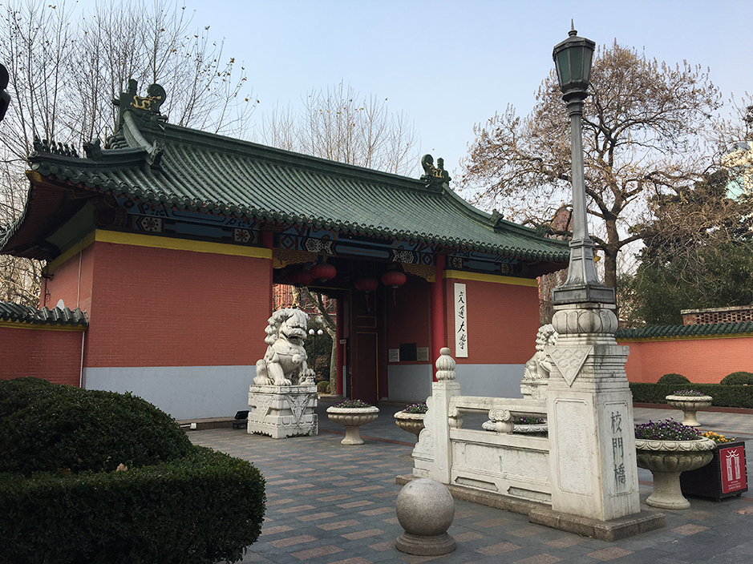

往届会议照片


2017年6月23日至25日，中国，上海
中文版 English

会议地点：上海市徐汇区华山路1954号
| 起点 | 距交大距离 | 打车费用 | 公共交通 |
|---|---|---|---|
| 浦东国际机场 | 47.4公里 | 约170~220元 | 地铁2号线东延伸段——地铁2号线——地铁9号线徐家汇站18号出口或10号线交通大学站4口 |
| 起点 | 距交大距离 | 打车费用 | 公共交通 |
|---|---|---|---|
| 上海虹桥机场（火车站） | 11.6公里 | 约40~60元 | 地铁10号线交通大学站4号出口 |
| 起点 | 距交大距离 | 打车费用 | 公共交通 |
|---|---|---|---|
| 上海南站 | 6.1公里 | 约23~29元 | 线路一：地铁1号线徐家汇站18号出口 线路二：地铁3号线——地铁10号线交通大学4号出口 |
| 起点 | 距交大距离 | 打车费用 | 公共交通 |
|---|---|---|---|
| 上海火车站 | 7.7公里 | 约27~35元 | 地铁1号线徐家汇站18号出口 |